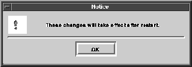
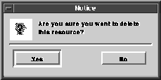

Notification
The Notification class is used to handle special informational dialogs. Typically these notification dialogs, or notices, inform the user of an error or some irrevocable action just initiated by the user. A notice usually has either a single OK button, or a Yes and No button. Both can have an optional Cancel button and a Help button. Above these buttons is a static text item containing text describing the situation to which the user must respond. Notices are decorated according to the current look-and-feel and are application modal. Applications can add their own icon, an image with a mask, to any notice.
Two types of notices are available to applications, the warning notice and the caution notice. The Warning notice consists of a text item, an OK button, and an optional cancel button. The warning notice simply informs the user of a particular situation; the user responds with OK or possibly by canceling the action. Figure 65 shows an example Warning notice.
Figure 65. A typical warning notice

The caution notice consists of a text item, a Yes button, a No button, and an optional Cancel button. The caution notice is used in situations when the user has a choice of actions or may possibly cancel the current operation. Figure 66 shows an example caution notice.
Figure 66. A typical caution notice

Note that some notification dialog attributes cannot be manipulated through Notification class entry points¯these attributes can be manipulated through Window class entry points instead. You can call any Window class function on a notification dialog by passing it the result of GetWindow. For example, the function call vwindowSetBackground(vnoticeGetWindow (notice), background) changes the background color of the notice notice to background. Notification dialog attributes that overlap window attributes refer to the same piece of information.For example, vwindowSetData changes the same attribute as vconfirmSetData.
The Title attribute is copied internally by the dialog when it is set unless its scribe indicates that the title should be shared. Notification dialogs never take over ownership of Title attributes.
Example 113. The following code fragment illustrates the components necessary to
implement the caution notice. A warning notice would be constructed similarly but
without a call toSetCaution.Implementing a caution notice
The notice2 example presents a complete program that creates a base window with a single button. The program prompts the user with a notice before quitting. To do this, a dialog is subclassed with the window state method substituted. This lets you catch a window close event and still put up a notice. This example is common for document-based applications that need to ask the user if changes should be saved.
Process is intended to be used alone. When called, it opens the notice and waits for a button to be selected. Once a button is selected the notice is closed and the tag of the selected button is returned. Use this routine when the application simply wants to know which button has been pressed. The notice closes regardless of the button selected.
The other three blocking confirmation routines are used to keep a notice open even after a button is pressed. This allows the user to make several selections before closing the notice. These three functions provide this capability without continually opening and closing the notice (as would be necessary with Process). ProcessStart opens the notice and does not block. ProcessGet waits until a confirmation button is selected and returns the tag of that button. It does not close the notice and must be between calls to ProcessStart and ProcessStop. ProcessStop closes the notice and must be called after a call to ProcessStart.
A blocking notice differs from a typical notice in two primary ways. First, any not called when a button is pressed. The tag of the selected button is returned and it is the application's responsibility to handle this directly. Second, the dialog's Close method is not called since the application is explicitly controlling when the notice is to be closed.
Creating and Implementing a Notice
To create a notice, you can call Create or use a resource function to read the notice from a resource file created by the Visual Resource Builder. The latter approach is more convenient, but the former approach is demonstrated here in order to more completely illustrate the Notification class entry points./*
* Notice hook routines.
*/
static int cautionNoticeYes(vnotice *notice, vevent *event)
{
/*
* Perform action based on a yes response.
* Return TRUE and the notice will close.
* Return FALSE and it will remain open.
*/
return TRUE;
}
static int cautionNoticeNo(vnotice *notice, vevent *event)
{
/*
* Perform action based on a no response
*/
return TRUE;
}
int main(int argc, char *argv)
{
// ...
vnotice *notice;
/*
* Create the notice
*/
notice = vnoticeCreate();
/*
* Set notice to be a caution notice
*/
vnoticeSetCaution(notice, TRUE);
/*
* Set hook functions.
*/
vnoticeSetYesHook(notice, cautionYesNotice);
vnoticeSetNoHook(notice, cautionNoNotice);
/*
* notice can be opened at any time ...
*/
vnoticeOpen(notice);
/*
* Place real code here, need to enter event loop to
* actually open notice and have hook functions called
*/
/*
* when finished, release memory...
*/
vnoticeDestroy(notice);
exit(EXIT_SUCCESS);
return EXIT_FAILURE;
}
Sample Code
Complete source code demonstrating some of the concepts presented in this chapter is available in your Galaxy distribution in the samples/docsamps directory. Advanced Use of the Notification Class
Before discussing advanced use of the Notification class it is important to understand how the class is designed. The Notification class is a subclass of the Confirm class. Many of the Confirm class features can also be used with notices. The following paragraphs describe how both warning and caution notices make use of the Confirm class. Refer to Confirmation class for more information. Warning Notices
A warning notice uses the OK button from the Confirm class. The OK button must appear in warning notices for all look and feels, and is never hidden. (Under OPEN LOOK, the title of an OK button is "Apply.") A warning notice's cancel button corresponds directly to the Confirm class's cancel button. A call to S ensures that the cancel button will always be visible. The warning notice implements the okHook and cancelHook methods from the Confirm class. Caution Notices
A caution notice uses the Confirm class's OK button. A caution notice simply switches the title of the OK button to "Yes." The notice's No button is a generic confirmation button with a tag of vname_No. The cancel button for a caution notice is implemented like the cancel button for a warning notice. Additional Notice Features
The Notification class uses the Confirm class's vconfirmORDER_BUTTONS method to arrange the buttons in a notice. An application may also add other generic confirmation buttons using the underlying confirm. Vertical arrangement may also be implemented from the Confirm class. Blocking Notices
Blocking notices directly use the Confirm class's blocking confirmation dialog entry points. These routines will open a notice and wait until one of the confirmation buttons is activated, and then return the tag of the button selected. Refer to the Confirm class for more on blocking confirmation dialogs.
Table of Contents
Help Map
Need help? Contact Visix.